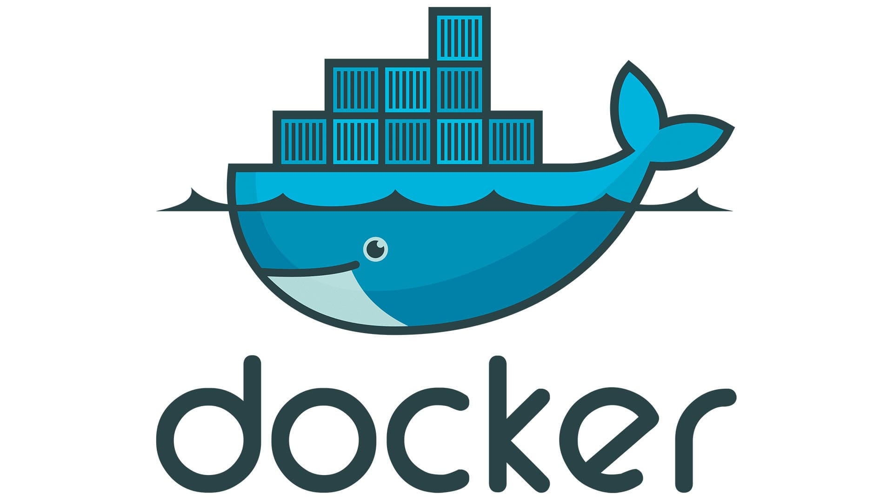
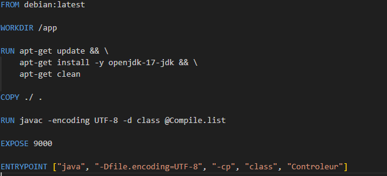
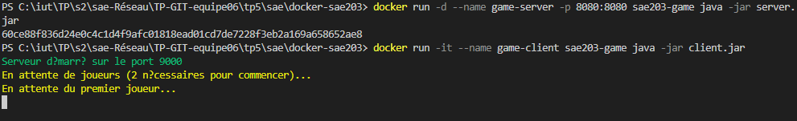
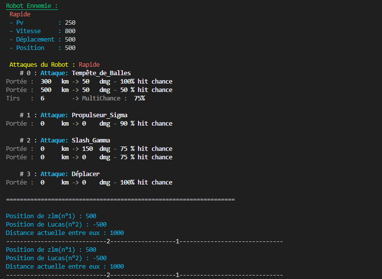

Développement d’un jeu multijoueur en mode console (CUI) utilisant Docker et GitHub pour la gestion de versions. L’objectif était de maîtriser ces outils essentiels au développement collaboratif tout en créant une application fonctionnelle.
Description du projet
Ce projet consistait à développer un jeu de plateau multijoueur en mode console, avec gestion réseau (client/serveur), conteneurisation Docker et versioning GitHub. L’accent a été mis sur la modélisation algorithmique, la communication réseau et la gestion collaborative du code.
Aspects techniques
Technologies utilisées
Java
Docker
GitHub
Shell
Fonctionnalités clés
Gestion des tours de jeu
Logique du plateau (tableau 2D)
Communication réseau (sockets Java)
Validation des coups et conditions de victoire
Conteneurisation avec Docker
Gestion collaborative avec GitHub
Structure du projet
Classe principale du jeu
Gestion des joueurs et du plateau
Protocole de communication réseau
Dockerfile et scripts de lancement
Illustration

Logo Docker

Dockerfile du projet

Lancement du serveur

Interface console du jeu
Compétences acquises
Analyse algorithmique
Décomposition d’un problème complexe en éléments simples et gestion des structures de données adaptées.
Développement collaboratif
Utilisation de GitHub pour la gestion de versions, branches, pull requests et suivi des tâches.
Conteneurisation
Maîtrise de Docker pour l’isolation, la portabilité et le déploiement du projet.
Méthodologie
Analyse méthodique : Découpage algorithmique (tours de jeu, validation des coups, synchronisation réseau).
Implémentation : Développement des modules (plateau, joueurs, communication, Dockerfile).
Tests : Vérification de la robustesse réseau, validation des règles et scénarios de jeu.
Collaboration : Utilisation de GitHub pour le travail en équipe et la gestion des versions.
Résultats
Création d’un jeu multijoueur fonctionnel en mode console
Gestion efficace des connexions et synchronisation réseau
Déploiement facilité grâce à Docker
Maîtrise des outils collaboratifs (GitHub, Docker)
Application concrète des concepts mathématiques et algorithmiques